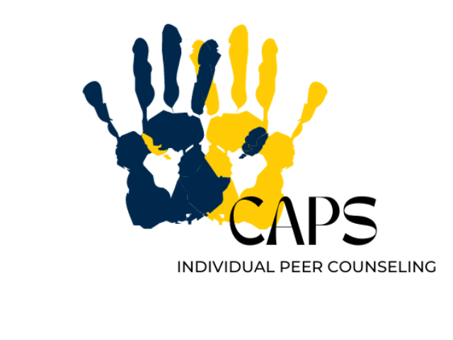

Welcome to the Counseling and Psychological Services (CAPS) Page
Counseling and Psychological Services (CAPS) at the University of Michigan provides a wide range of mental health support to help students navigate their academic and personal lives. CAPS offers confidential counseling, crisis intervention, and wellness programs to promote emotional well-being and resilience.
Services Provided:
-
Individual Counseling:
Professional one-on-one support to address personal and academic challenges.
Group Therapy:
Connect with peers in a supportive environment to discuss shared experiences.
Crisis Support:
Immediate assistance for students in distress or facing urgent mental health concerns.
Workshops and Outreach:
Programs to develop coping skills, stress management, and self-care practices.

How to Access CAPS:
Students can schedule appointments or attend drop-in sessions to receive mental health support in a safe and confidential space.
-
Location:
Michigan Union, 4th Floor
Hours of Operation:
Monday - Thursday: 8am - 6pm Friday: 8am - 5pm Saturday & Sunday: Closed
Urgent/Crisis Support at CAPS: Monday - Friday from 10am - 4:30pm
Virtual Services:
Online counseling options are available for remote support

Self-Help and Resources:
CAPS provides online self-help tools, mental health screenings, and informational resources to empower students to take charge of their well-being.
-
Wellness Coaching:
Personalized support to build resilience and manage stress effectively.
Self-Guided Resources:
Access mindfulness exercises, coping strategies, and wellness tips online.